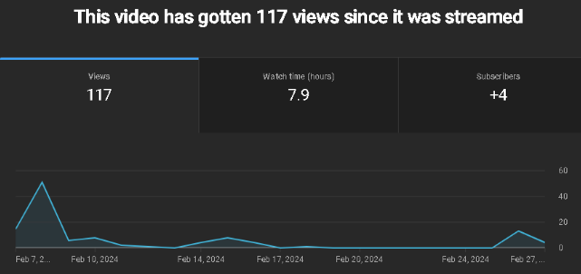
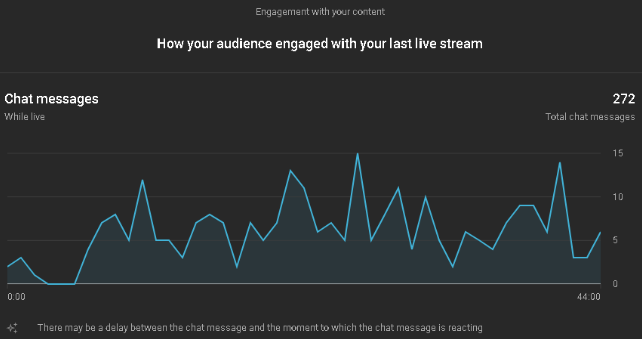
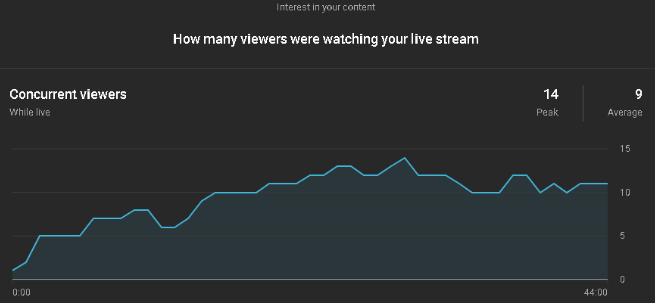

Yippie! We finally did it, we finally made our debut. Make sure to watch our stream!
Summary of the page
The stream is a jolly good podcast talk with friends.
In the stream, a group of friends (Sean, Faythe, and Khim) are with some members of the Visionaries (Kenneth and Shiloh)
to share past experiences and stories with both the viewers and each other!
In the stream titled, Tropa Time Talk with The MAIRS! ft. Kenneth and Shiloh from the Visionaries,
the streamers with the special guests from the Visionaries (Kenneth and Shiloh) firstly introduced themselves to the viewers.
And after the short introduction, they shared stories and experiences, and talked about the field trip
that they have participated in, the fun week regarding the sport that they are going to participate in and the name of the team colors,
the streamers also talked about the get-together in the SM after the year end party.
Additionally the streamers were also interacting and shouting out the viewers to add more connection to the streamer with the viewer.
Overall, the summary of the stream was the streamers having a casual conversation about their shared past experiences and stories with
both the viewers and each other, and interacting with the viewers during the stream.
Positive Things from the Stream
The streamers tried to set a casual atmosphere for the stream and it was well done due to the familiarity between the streamers.
The low effort look of the stream also helped set the casual atmosphere, as the watchers would be able to recognize that the stream was not being done by
seasoned professional streamers.
Other guests being brought into the stream solidified the atmosphere of the stream to just be casual talk.
Another reason for the atmosphere of the stream being well done is the unscripted nature of their conversations, they were able to set a very natural progression
in the stream that was not stopped by any awkwardness as if they were friends just casually talking to one another unrecorded.
The progression of the stream was seamless and the stream was able to progress in its discussions naturally due to the streamers ability to converse with each other.
Apart from the ones mentioned before, another thing well done by the streamers were the wide variety of topics they were able to discuss in their stream.
Due to the familiarity of the streamers with each other, they were able to find various topics to discuss in the duration of the stream.
The stream was kept interesting by the different engaging stories and rants by the streamers and their guests.
The realism in the emotions of the streamers was another thing that was well done in the stream.
All of the streamers and their guests were able to express realistic emotions during the stream as they were not restricted by a main topic
where they should keep professional,
as there was no main topic and the streamers were able to talk about anything they wanted without the general vibe of the stream being destroyed.
Opportunities in the Stream
The section of the broadcast when we discussed their school and outside of their school experiences is an example of a good opportunity because
it helps connect and be relatable with the audience while allowing them to add more to the conversation. One thing to add is when the streamer is interacting and shouting
out the audience is also another good opportunity because they're connecting with the audience and it helps the audience feel known and feel like they are connected
with the conversation of the stream. Additionally, the audience could add more to the discussions hence branching out the discussion and helping with
the viewership engagement.
With the opportunities found during the stream, there were also missed opportunities.
One of them is that the streamers should have added more streaming materials to the stream, such as background music, overlays, layouts, and presentations.
Another missed opportunity is that while having conversations and interactions with both the viewers and with each other,
the streamers should have played games (such as IceBreakers and online games) with the viewers to increase engagement and viewership levels.
Viewer Engagement
How does the engagement of the audience affect the overall performance of the stream?
The performance of the stream all depends on the viewer and to boost its performance is by interacting with the viewer and
by interacting with the viewer it helps the stream perform better by connecting with the audience and being relatable with the viewer it helps
build a connection with the audience and the audience could add more to the conversation hence boosting the performance of the stream.
During our stream, it was relatively healthy with streamers interacting with the viewer and shouting them out.
It helps keep the performance of the stream relevant and fresh with the streamers connecting with the audience.
Overall the engagement of our viewer is relatively healthy based on our forms, during the stream, and YouTube analytics.
Viewership
The stream has received a total of 105 views, with the stream gaining 14 views in its duration. After the stream,
it has received 91 views, the reason for the high viewership of the stream is that it has been recommended by the algorithm to a lot of viewers.
The algorithm has favored the stream to be recommended to large amounts of potential viewers,
enough so that it managed to get the attention of nearly a hundred viewers.
Another reason for the large amounts of views in the stream is the prior promotion done by the ones who would be streaming,
this allowed for more awareness for the stream and more audience that would watch the stream as a result.
Their different methods of advertising their stream prior to going live allowed for more views in the stream.
The views during their stream peaked around 14 views.
Appendix
Figure 1: Total Viewer Count
Figure 2: Live Stream Chat Count
Figure 3: Concurrent Viewer
| Topic | Activity | Time Allotment (mins) | Screen | Audio |
|---|---|---|---|---|
| Introduction | Introduce ourselves | 5 minutes | Video | Video Audio/Mic |
| Discussion | Talk more about ourselves, share stories, and interact with viewers |
20 minutes | Video | Video Audio/Mic |
| Conclusion | Wrapping up and credits |
5 minutes | Video | Video Audio/Mic |